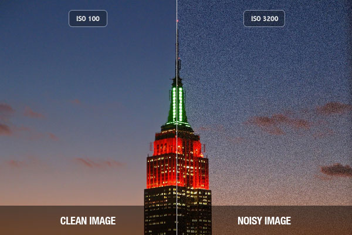

Fundamentals of Photography
ex·po·sure
The amount of light which reaches the film or sensor of a camera.
ap·er·ture
The area of space a lens reveals to light when closing or opening the blade diaphragm.
shut·ter
A mechanism which controls the amount of time a shutter is pulled away from a camera sensor or film to expose light.

iso-
How sensitive a sensor or film is to light rays.
